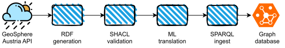
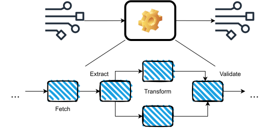
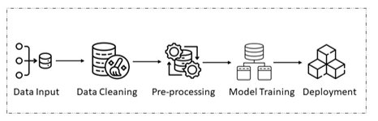
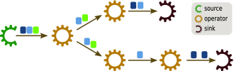
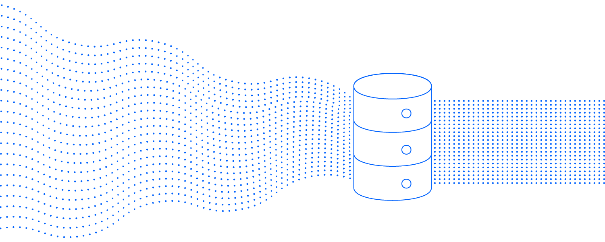
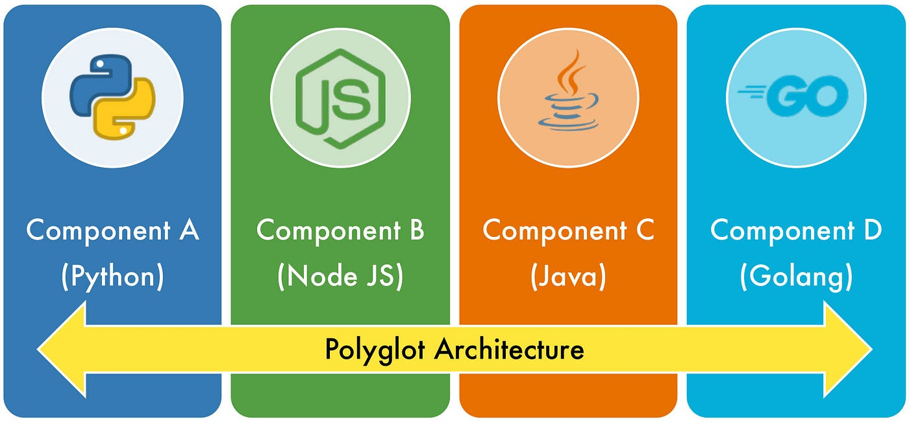
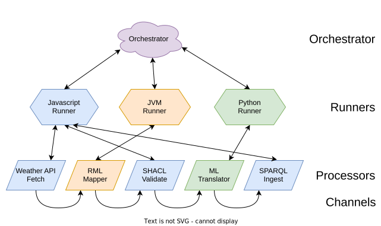
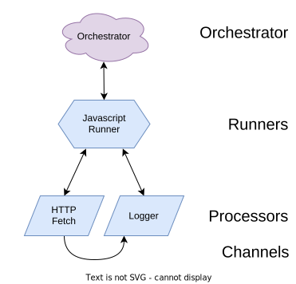
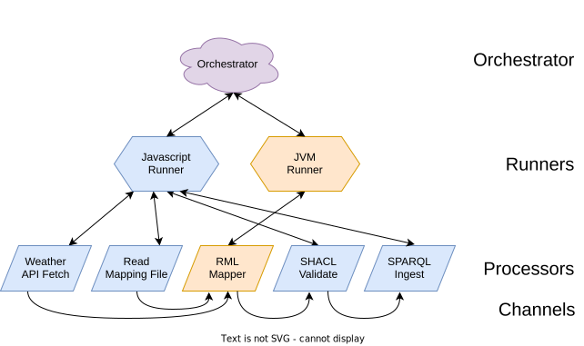

Building Streaming and Cross-Environment Data Processing Pipelines with RDF-Connect
Agenda
- First part: Introduction to RDF-Connect (1:20h)
- What will we do in this tutorial? 🤔
- The what and why of RDF-Connect? 🎯
- RDF-Connect architecture & components ⚙️
- Coffee break ☕ (10m)
- Second part: Hands-on (1:30h)
- Implementing a processor 🏗️
- Assembling a pipeline 🔗
What will we do in this tutorial? 🤔
Tutorial overview
Part 1: Introduction to RDF-Connect
You will learn the motivation behind RDF-Connect, its conceptual model and architecture,
by following a running example of a knowledge graph lifecycle pipeline.
Part 2: Hands-on
You will implement a ML-based processor and integrate it in the knowledge graph lifecycle pipeline.
KG lifecycle pipeline
A pipeline of a knowledge graph lifecycle process, where weather data (from an Austrian API service) will be collected, transformed into RDF, validated against a SHACL shape, enriched and published on a RDF graph store.

The what and why of RDFC? 🎯
Data processing pipelines are crucial in modern data-centric systems
They enable the transformation, integration, and analysis of data from and to various sources and targets.
Pipelines are usually composed of multiple complex tasks
However, building, managing and reusing these pipelines can be complex and challenging.

Pipelines are ubiqutous in real world systems
- - ETL pipelines for data warehousing
- - Data integration pipelines for combining data from multiple sources
- - Machine learning pipelines for training and deploying models
- - Real-time data processing pipelines for streaming data



Stream processing computational paradigm for continuos and dynamic data systems
Traditional batch processing systems suffer from latency
problems due to the need to collect input data into batches
before it can be processed.
— Isah et al., A Survey of Distributed Data Stream Processing Frameworks, 2019
Current real-world data systems often require real-time or near-real-time processing of dynamic data.
Stream processing allows for the continuous ingestion and processing of data as it arrives, enabling timely insights and actions.

Cross-environment execution: choosing the best of all worlds
The ability to execute applications written in different programming languages in an integrated manner offers several advantages:
- - Flexibility: Developers can choose the most suitable language for each component of the application based on its strengths and capabilities.
- - Code reuse: Existing libraries and frameworks can be leveraged, reducing development time and effort.
- - Scalability: Components can be scaled independently based on their specific requirements, allowing for efficient resource utilization.
- - Efficiency: Not all parts of an application require the same level of optimization.

Declarative, reusable and provenance-aware data processing
TODO: Explain why declarative and provenance-aware data processing is needed
RDF-Connect requirements overview
TODO: Diagram with requirements overview (as in the pyramid used in the ISWC paper slides)
Aren't there like a million pipeline frameworks already?
TODO: Table with most prominent frameworks and their feature support
TODO: Deeper explanation and differentiation with CWL
RDF-Connect architecture & components
Running example: the goal
- 1. Retrieve data from weather API
- 2. Data is transformed into RDF using RML
- 3. RDF data is validated against a shape
- 4. Translate to literals to native language
- 5. RDF data is published through a triple store
High level architecture overview
TODO: Diagram with generic architecture overview. I imagine a simple layered architecture having:
- - an orchestration layer at the top
- - a runners layer highlighting the different environments (e.g., Node.js, browser, Python, etc.)
- - a processors layer with the processors belonging to the different environments
- - a vertical channel layer across all other layers, since channels are used by all other components
RDF-Connect data model overview
TODO: Diagram with RDFC ontology showing main concepts and relations (similar to the one in the ISWC paper)
Pipeline design of running example

Pipeline File Structure
A pipeline is described in RDF configuration files:
- 🔗 Channels
Define how data flows between processors.
- 📦 Runners
Specify which runtime environments are needed.
- ⚙️ Processors
Tasks that run inside a runner.
Deep Dive: SHACL Shapes
Each runner and processor comes with a SHACL shape.
These shapes serve as the glue of RDF-Connect:
- ✅ Validation of correctness
Ensure pipeline definitions are consistent before execution.
- 🔄 Mapping RDF → JSON(-LD)
Runners don’t need to understand RDF: processor arguments are delivered as JSON (sh:name
fields map directly to JSON object fields names).
- 📖 Documentation
SHACL shapes double as a human-readable contract for processor usage.
Deep Dive Orchestrator: Overview
- 📂 Understand pipeline configuration
Resolve the full pipeline, including any imported modules.
- ✅ Validate pipeline
Use SHACL shapes to check that the pipeline definition is correct.
- 🔌 Communicate with runners
Interact with runners via gRPC to control processors and exchange messages.
- 📊 Centralized logging
Collect logs from all runners and processors for monitoring and debugging.
Deep Dive Orchestrator: Responsibilities
- 📜 Initialize Pipeline
- ▶️ Start runners
Launch each runner using its configured command.
- ⚙️ Initialize processors
Instruct runners to start the processors they manage.
- 📡 Route messages
Deliver incoming messages to the correct runner / processor.
Deep Dive Orchestrator: Message Types
- ✉️ Single messages
Small payloads that fit in a single frame.
- 🌊 Streaming messages
Continuous streams for large data that can’t fit in one frame.
Deep Dive Runner: Overview
- 🤝 Bridge between processors and orchestrator
Make it possible to combine processors written in different programming languages.
- 🌱 Lower the barrier for new processors
Runners are designed so the community can easily add their own processors.
Currently runners exist for Javascript, JVM and Python.
Deep Dive Runner: Responsibilities
- ▶️ Start from command line
Runners can be launched as standalone processes.
- 🔌 Connect with orchestrator via gRPC
Handle control messages and data exchange.
- ⚙️ Manage processors
Start, stop, and monitor the processors they host.
Deep Dive Runner: Example
Example of a runner configuration in RDF (Turtle):
Deep Dive Processor: Overview
- ⚡ Unit of computation inside a pipeline
- 📥 Receives arguments mapped from RDF via SHACL
- 📤 Produces outputs (RDF, JSON, etc.)
- 🛠 Can do anything from calling APIs to generic tasks like HTTP POST
- 🏗 The runner defines the implementation contract (abstract classes, interfaces, etc.)
RDF-Connect dive in: Logging
TODO: Explanation of how logging works
JavaScript Ecosystems
- ⚡ Processor extends an abstract class
- ⚙️ Runner provides Readers & Writers to handle messages idiomatically
- 📦 Processors can be published to npm with their config
- 📥 Pipelines install processors via
npm install
Java Ecosystems
- ⚡ Processor extends an abstract class
- ⚙️ Runner provides Readers & Writers to handle messages idiomatically
- 📦 Processors published via GitHub, included in fat jar with config
- 📥 Pipelines include Jitpack link in
build.gradle
RDF-Connect dive in: Python ecosystem
TODO: Overview and main links to resources
Hands-On Pipelines
- 📂 Pipeline 1: Read a file → Log contents
- 🌦️ Pipeline 2: Weather API → RDF → Validation → Publish
- 🤖 Pipeline 3: Implement your own ML processor in Python
- 🌦️ Pipeline 4: Weather API → RDF → Validation → Translation → Publish
Follow allong in the GitHub repository.
Each branch is a task or a step in the tasks!
github.com/rdf-connect/vienna-weather-forecast-kg-pipeline
Pipeline 1: File → Log

Follow along on branch tbd.
Pipeline 1: Setup
Install the orchestrator and processors:
npm install @rdfc/orchestrator-js
npm install @rdfc/file-utils-processors-ts
npm install @rdfc/log-processor-ts
🛠️ The log processor is also available in Python and Java.
You can swap it to see cross-language interoperability in action!
Pipeline 1: Configuration
@prefix rdfc: <https://w3id.org/rdf-connect#>.
@prefix owl: <http://www.w3.org/2002/07/owl#>.
Pipeline 1: Run the Pipeline
Start the orchestrator with the configuration file:
npx rdfc pipeline.ttl
✅ You should see the file contents being logged.
Hands-On Pipelines
- 📂 Pipeline 1: Read a file → Log contents ✅
- 🌦️ Pipeline 2: Weather API → RDF → Validation → Publish
- 🤖 Pipeline 3: Implement your own ML processor in Python
- 🌦️ Pipeline 4: Weather API → RDF → Validation → Translation → Publish
Follow allong in the GitHub repository.
Each branch is a task or a step in the tasks!
github.com/rdf-connect/vienna-weather-forecast-kg-pipeline
Pipeline 2: Weather API

Follow along on branch tbd.
Weather API Pipeline: JavaScript Setup
Install the orchestrator and required processors:
npm install @rdfc/orchestrator-js
npm install @rdfc/file-utils-processors-ts
npm install @rdfc/shacl-processor-ts
npm install @rdfc/sparql-ingest-processor-ts
Weather API Pipeline: Java Setup
Add the required dependency to your Gradle build file:
plugins { id 'java' }
repositories {
mavenCentral()
maven { url = uri("https://jitpack.io") }
}
dependencies {
implementation("com.github.rdf-connect:rml-processor-jvm:master-SNAPSHOT:all")
}
tasks.register('copyPlugins', Copy) {
from configurations.runtimeClasspath
into "$buildDir/plugins"
}
Install jars with
gradle copyPlugins.
The jvm-runner downloads the jvm-runner itselve, no installing required.
Add Python Machine Leaning Capabilities
Add Python runner
pip install hatch
hatch env create
hatch shell
uv init
uv add rdfc_runner
Hands-on: Build your own processor
TODO: Describe the goal and Link to the step-by-step guide
Let's rerun the pipeline with your processor
Bringing all together
TODO: How to include the created processor in the previous hands-on into the pipeline descriptor?
Hands-on: Let's run a pipeline
TODO: Link to the step-by-step guide